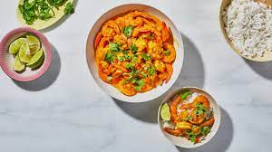

Chungdi Malai (Coconut Shrimp Curry)

DESCRIPTION
Chungdi malai is one of the most coveted dishes of Puri (a city in eastern India). It showcases the elegant flavors that are the trademark of the regional Oriya cuisine. Coconut milk and shrimp are natural dancing partners, rounded out with the earthy note of ghee laced with a tapestry of spices. The shrimp should be marinated for about 1 hour to infuse them with flavor, but otherwise this dish comes together quickly, making it an ideal family meal on a weekday that calls for something special.
INGREDIANTS
- 2 lbs medium shrimp, peeled, deveined
- 2 bay leaves
- 2 cinnamon sticks, broken into smaller pieces
- 4 whole cloves
- 2 tsp ground turmeric
- 2 tsp garam masala
- 1 tsp ground cardamom
- Kosher salt to taste
- 1 tbsp mustard oil*
- 1 large yellow onion, finely chopped
- 1 tbsp finely chopped ginger
- 2 tsp ground cumin
- 1 tsp kashmiri or other mild red pepper powder
- 1 tsp sugar
- 1 cup full-fat unsweetened coconut milk
- 2 tbsp plain whole-milk yogurt
- 1 tbsp ghee
- Finely chopped cilantro, cooked basmati rice, and lime wedges (for serving)
*Most mustard oils are not FDA-approved as edible in the United States due to their high erucic acid content. If you are concerned, look for Yandilla, an FDA-approved brand, online, or use olive oil instead.
INSTRUCTIONS
- Toss shrimp, bay leaves, cinnamon, cloves, turmeric, garam masala, and cardamom in a large bowl until shrimp are well coated; season with salt. Cover bowl with a damp cloth and chill 1 hour. Remove and discard bay leaves, cinnamon, and cloves.
- Heat oil in a large high-sided skillet over medium-high. Add onion, ginger, cumin, red pepper powder, and sugar and cook, stirring, until onion is translucent, about 5 minutes. Add coconut milk and yogurt and whisk until smooth, then add shrimp and ghee and simmer, turning shrimp halfway through, until shrimp are cooked through, 7–8 minutes. Taste and season with salt.
- Top with cilantro and serve with rice and lime wedges.